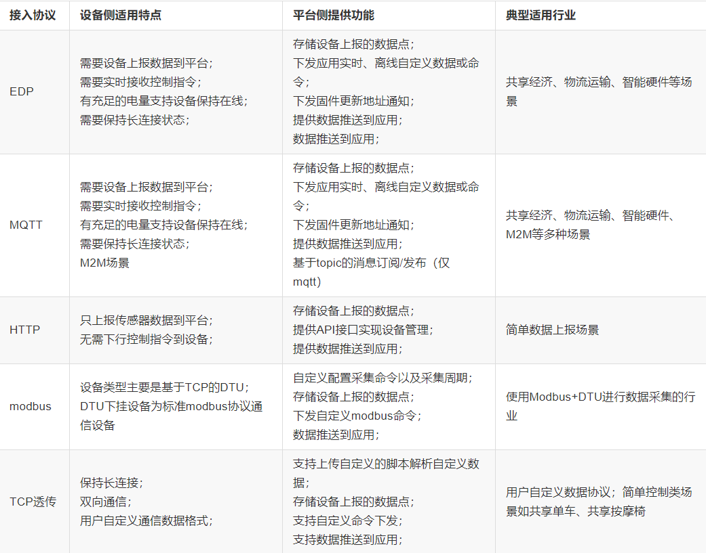
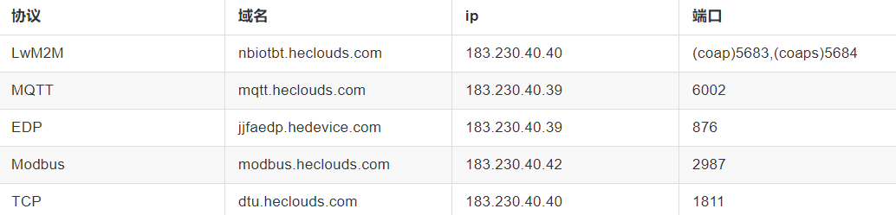

ESP8266
ESP8266
1.ESP8266的工作模式
ESP8266为一个WiFi透传模块，和蓝牙透传模块具有主从两种工作模式一样，也具有两种工作模式：STA模式（Station）和AP模式（Access Point），一般WiFi模块还会有一个STA+AP模式，即可以在两种模式下切换的状态。
(1)AP模式下，相当于无线局域网中的基站。WiFi模块产生热点，提供无线接入服务，允许其它无线设备接入，提供数据访问，一般的无线路由/网桥工作在该模式下。该模式对应TCP传输协议中的服务端（TCP Server）。
(2)STA模式下，相当于无线局域网中的移动站。WiFi模块为连接到无线网络的终端（站点），可以连接到AP，一般无线网卡工作在STA模式下。该模式对应TCP传输协议中的客户端（TCP Client）。
2.ESP8266的开发方式
ESP8266系列一般都具有两种开发方式，
(1)AT指令开发方式，即厂家出厂时预先在ESP8266芯片烧入好固件(不同的固件对应的AT指令可能有差别，在网上看教程之前先确定固件是否一致)，封装好WiFi的TCP/IP协议栈，且内部已经实现透传，而用户只需要使用一个USB转TTL的模块或者单片机的串口就能实现与WiFi模块的通信，发送AT指令来对WiFi模块进行控制。（和蓝牙透传模块类似）。
(2)SDK开发，因为ESP8266本身即是可编程的芯片，可以把它视为一个带有无线通信的单片机，而用户需要在专门的IDE中编写对应的程序，然后通过烧写固件的方式将程序写入到芯片中，因此，此时想要实现WiFi通信，需要自定义WiFi协议栈，因此对用户掌握的相关知识要求更高。
- 所以，如果发现一个ESP8266模块对AT指令没有反应，那很有可能是内部的程序不是既定的AT固件，而是被烧入了其他程序
3.与计算机网络知识的关联
WIFI和蓝牙一样，都工作于TCP/IP体系中的网络接口层，ESP8266不应该称为WIFI模块，真正的WIFI模块只是集成在了其CPU上的一个外设，就跟定时器一样。ESP8266的固件内部实际上是实现了完整的TCP/IP协议栈，而不只是其网络接口层。通过接入能上网的AP就可以连接至互联网。
4.ESP8266的使用
- ESP8266内嵌了TCP/IP协议栈，它可以通过AT指令直接实现与服务器某进程的端到端的连接，就像
Socket一样，可以选择TCP或UDP或SSL的传输层协议。
如果要连接到Onenet之类的云平台上，可以分为以下几个步骤：
1.首先要根据场景选择适合的应用层的协议
2.接着查找该协议对应服务器的ip地址和端口号

3.通过TCP或UDP等协议连接到对应服务器的端口上
4.发送APIKey、设备鉴权等该协议要求的验证信息，完成Onenet平台上的设备登录
5.进行信息交互
参考链接
1.【嵌入式模块】ESP8266完整教程_记录无知岁月的博客-CSDN博客_esp8266教程